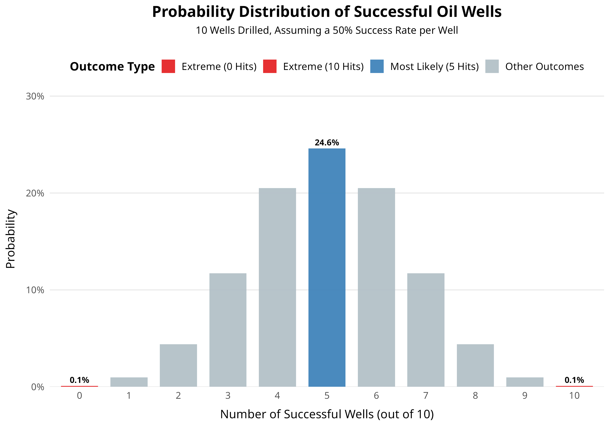
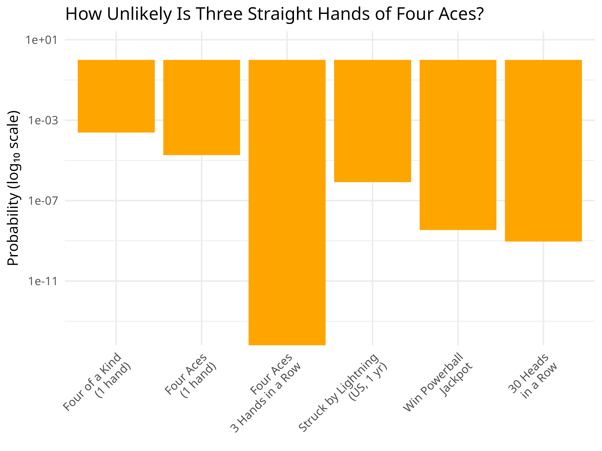

Section 3.1 Part A: Events, Sample Spaces, and Probability
Statistics reasons from a sample back to the population it came from. Probability runs the same road in the other direction: it starts from what we assume is true about a population and works out how likely a particular sample would be. You need the second one before the first one means anything.
Why this comes first
Every inference you make for the rest of this course rests on one move: deciding whether what you observed is too unlikely to be a coincidence. Chapter 3 is where you learn to put a number on "too unlikely." Here are two cases where the number does the deciding.
Ten dry wells
An oil exploration company has drilled ten wells in the past year and every one came up dry. The company's prospectus claims it hits oil about half the time.
Would you invest?
If the claim were true, ten dry wells in a row has probability
P(X = 0) = (0.5)10 = 11024 ≈ 0.001About one chance in a thousand. Either the company got extraordinarily unlucky, or the 50% claim is wrong. Probability does not tell you which — it tells you that one of those two things has to be true, which is enough to keep your money in your pocket.

Four aces, three times running
You are playing poker. In three consecutive hands, the same player is dealt four aces.
Are the cards being shuffled honestly?
Four aces in one five-card hand has probability about 482,598,960 ≈ 0.0000185. Three hands running, if the deals are independent, is roughly 6.3 × 10−15 — about one chance in 159 trillion.
Nobody needs a statistics course to be suspicious here. The point is that probability lets you say how suspicious, on a scale, and defend the number.

The idea to carry forward. A probability is not a prediction about the next observation. It is a statement about how often something happens in the long run, and that is what makes it usable as evidence.
Four definitions, in order
These four build on each other, so read them in sequence rather than skipping to the one that looks unfamiliar.
- Experiment
- An act of observation whose outcome cannot be predicted with certainty. Toss a coin. Roll a die. Ask one voter who they support. Measure the dissolved oxygen in one water sample.
- Sample point
- The most basic possible outcome of an experiment. It cannot be broken down further. For one coin: H, or T. For one die: 1, 2, 3, 4, 5, or 6.
- Sample space S
- The set of every sample point the experiment can produce. S = {H, T} or S = {1, 2, 3, 4, 5, 6}
- Event A
- Any collection of sample points from S, including none or all. An event happens when the experiment produces any sample point inside it. A = {roll an even number} = {2, 4, 6}
The distinction that gets missed: every sample point is an event, but most events are not sample points. "Roll a 4" is both. "Roll an even number" is only an event — it is three sample points wearing one name.
Video: sample spaces and events
Fourteen minutes on the same four definitions, plus a first look at combining events with and, or and not — which is where Section 3.2 picks up.
Watch sample spaces and events on YouTube The video opens in a new tab. This page does not load YouTube automatically.Why two coins have four outcomes, not three
Toss two coins and record both faces. Students very often write the sample space as {two heads, one of each, two tails} — three outcomes. That is a reasonable-sounding answer and it is wrong, and the reason it is wrong is the single most useful thing on this page.
The coins are separate objects even when they look identical. HT means head on the first coin and tail on the second; TH is the other way round. They are different outcomes of the experiment, so they are different sample points.
S = {HH, HT, TH, TT}, and each of the four is equally likely for fair coins, so each has probability 14. Notice that "exactly one head" is an event containing two of them, so its probability is 12 — twice that of "two heads". This is why the three-outcome answer fails: those three outcomes are not equally likely.
Check yourself before Part B
Answer each one in your head first, then open it.
An experiment has 4 sample points. How many different events can you define?
16. An event is any subset of S, and a set of 4 elements has 24 = 16 subsets — including the empty set and all of S itself.
If that surprised you, list them for a 2-point sample space {H, T} and you will find 4: {}, {H}, {T}, {H, T}.
Roll two dice and record the total. Is 7 a sample point?
It depends on how you defined the experiment, and that is the lesson.
If the experiment is "record the total", then the sample points are the totals 2 through 12 and 7 is one of them — but they are not equally likely.
If the experiment is "record both faces", the sample points are the 36 ordered pairs, all equally likely, and 7 is an event containing six of them: (1,6) (2,5) (3,4) (4,3) (5,2) (6,1).
The second definition is almost always the more useful one, because equally likely sample points let you compute probabilities by counting.
Why did the ten-dry-wells argument need probability at all? Isn't ten in a row obviously bad luck?
"Obviously" is doing a lot of work there. Ten failures in a row would be unremarkable if the true success rate were 5%, and nearly impossible at 50%. The observation alone says nothing; it only becomes evidence once you compute how likely it is under the claim being tested. That comparison is the whole of statistical inference, and you will do it formally in Chapter 8.
Next: Part B, directly below this page in the module, takes the counting rules further — the multiplication rule, combinations, and how to assign probabilities to sample points that are not equally likely.